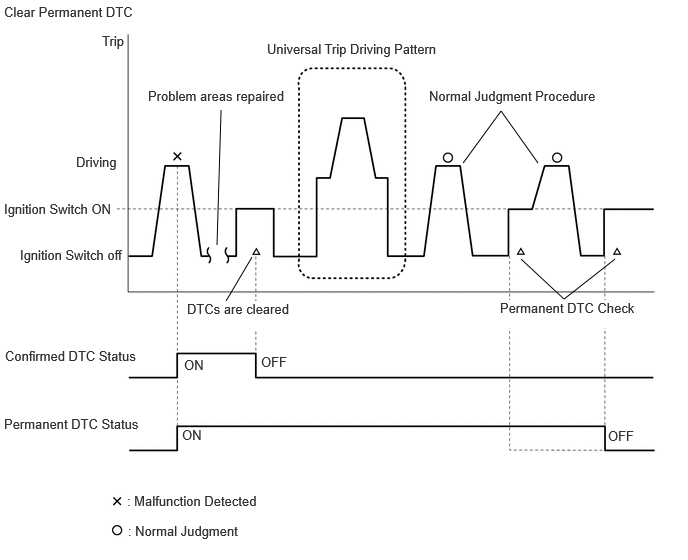
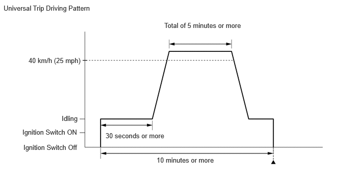

| Last Modified: 10-07-2025 | 6.11:8.1.0 | Doc ID: RM100000002JJ1H |
| Model Year Start: 2024 | Model: Tacoma | Prod Date Range: [12/2023 - ] |
| Title: AL80F (AUTOMATIC TRANSMISSION / TRANSAXLE): AUTOMATIC TRANSMISSION SYSTEM: DTC CHECK / CLEAR; 2024 - 2026 MY Tacoma [12/2023 - ] | ||
DTC CHECK / CLEAR
NOTICE:
When the diagnosis system is changed from normal mode to check mode or vice versa, all DTCs and freeze frame data recorded in normal mode are cleared. Before changing modes, always check and make a note of DTCs and freeze frame data.
HINT:
- DTCs which are stored in the TCM can be displayed on the GTS. The GTS can display the confirmed, pending and permanent DTCs.
- If a malfunction is detected during the current driving cycle, confirmed and permanent DTCs are stored.
- Some DTCs are not stored if the TCM does not detect the same malfunction again during a second consecutive driving cycle. However, such malfunctions, detected on only one occasion, are stored as pending DTCs.
- Confirmed and pending DTCs can be cleared by using the GTS or by disconnecting the cable from the negative (-) battery terminal. However, permanent DTCs cannot be cleared using either of these two methods.
- After clearing confirmed DTCs using the GTS (or
by disconnecting the cable from the negative (-)
battery terminal), permanent DTCs can be cleared when
the universal trip is performed and then the system
is determined to be normal for the relevant DTCs. The
driving pattern to obtain a normal judgment is
described under the "Confirmation Driving Pattern"
for the respective DTC.
To clear permanent DTCs, all of the following conditions must be are met:
- A universal trip has been performed.
- The vehicle has been judged as normal for 2 trips. (Normal judgment does not have to be performed in 2 consecutive trips, but normal judgment should have occurred in the latest trip.)
- No malfunctions are detected.
2-trip Detection Examples
|
Pending DTC |
Store condition |
Malfunction detected |
|
Clear condition |
System determined to be normal or DTCs cleared using GTS or Cable disconnected from negative (-) battery terminal |
|
|
Confirmed DTC |
Store condition |
Malfunction detected (2nd trip) |
|
Clear condition |
No malfunctions in 40 driving cycles or DTCs cleared using GTS or Cable disconnected from negative (-) battery terminal |
|
|
Permanent DTC |
Store condition |
Malfunction detected (2nd trip) |
|
Clear condition |
Ignition switch turned to ON after no malfunction detected in 3 consecutive driving cycles or After DTCs cleared using GTS or cable disconnected from negative (-) battery terminal, universal trip performed and normal judgment obtained for 2 trips |
|
|
MIL |
ON |
Malfunction detected (2nd trip) |
|
OFF |
Ignition switch turned to ON after no malfunction detected in 3 consecutive driving cycles or DTCs cleared using GTS or Cable disconnected from negative (-) battery terminal |
CHECK DTC
(a) Connect the GTS to the DLC3.
(b) Turn the ignition switch to ON.
(c) Turn the GTS on.
(d) Enter the following menus: Powertrain / Transmission / Trouble Codes.
Powertrain > Transmission > Trouble Codes
(e) Check for DTC(s) and freeze frame data, and write them down.
|
GTS Display |
Description |
|---|---|
|
Test Failed |
Shows the malfunction judgment results during the current trip. |
|
Pending |
Shows the malfunction judgment results up to now. (Indicates the possibility of a malfunction when no DTC is confirmed.) |
|
Confirmed |
Shows the DTCs confirmed up to now. (The number of current trips differs for each DTC.) |
(f) Check the details of the DTC(s).
Click here
![2024 - 2026 MY Tacoma [12/2023 - ]; AL80F (AUTOMATIC TRANSMISSION / TRANSAXLE): AUTOMATIC TRANSMISSION SYSTEM: DIAGNOSTIC TROUBLE CODE CHART](../../../../stylegraphics/info.gif)
CLEAR DTC (Pending and Confirmed DTC)
(a) Connect the GTS to the DLC3.
(b) Turn the ignition switch to ON.
(c) Turn the GTS on.
(d) Enter the following menus: Powertrain / Transmission / Clear DTCs.
Powertrain > Transmission > Clear DTCs
(e) Clear the DTCs.
OUTLINE
- After clearing confirmed DTCs using the GTS (or by disconnecting the cable from the negative (-) battery terminal), permanent DTCs can be cleared when the universal trip is performed and then the system is determined to be normal for the relevant DTCs. The driving pattern to obtain a normal judgment is described under Confirmation Driving Pattern for the respective DTC.
- To clear permanent DTCs, all of the following
conditions must be met:
- A universal trip has been performed.
- The vehicle has been judged as normal for 2 trips. (Normal judgment does not have to be performed in 2 consecutive trips, but normal judgment should have occurred in the latest trip.)
- No malfunctions are detected.
CLEAR PERMANENT DTC
(a) Connect the GTS to the DLC3.
(b) Turn the ignition switch to ON.
(c) Turn the GTS on.
(d) Enter the following menus: Powertrain / Transmission / Trouble Codes.
Powertrain > Transmission > Trouble Codes
HINT:
If "YES" is displayed for the value of "PERMANENT" at the top right of the GTS screen, permanent DTCs are stored.
(e) Select the "Generic" tab.
(f) Check if permanent DTCs are stored.
HINT:
If permanent DTCs are not output, it is not necessary to continue this procedure.
(g) Clear the DTCs (even if no DTCs are stored, perform the clear DTC procedure).
Powertrain > Transmission > Clear DTCs
NOTICE:
Do not clear the DTCs or disconnect the cable from the negative (-) battery terminal after performing this step.
(h) Perform the universal trip.
CAUTION:
When performing the universal trip driving pattern, obey all speed limits and traffic laws.
HINT:
The universal trip driving pattern and normal judgment procedure can be performed consecutively in the same driving cycle.
 (1) Start the engine and wait for 30 seconds or more.
(2) Drive the vehicle at 40 km/h (25 mph) or more for a total of 5 minutes or more.
HINT:
It is possible to complete the drive pattern even if the vehicle decelerates to less than 40 km/h (25 mph) during the driving cycle provided that the vehicle is driven at 40 km/h (25 mph) or more for a total of 5 minutes.
(3) Allow 10 minutes or more to elapse from the time the engine is started.
(i) Turn the ignition switch off and wait for 2 minutes or more.
(j) Perform the normal judgment procedure in the respective confirmation driving pattern of each output DTC.
HINT:
Do not turn the ignition switch off by mistake during this step.
(k) With the ignition switch ON, wait for 5 seconds or more.
(l) Turn the ignition switch off and wait for 2 minutes or more.
(m) Turn the ignition switch to ON.
(n) Enter the following menus: Powertrain / Transmission / Trouble Codes.
Powertrain > Transmission > Trouble Codes
(o) Check that the permanent DTCs have been cleared.
HINT:
If permanent DTCs are not output, it is not necessary to continue this procedure.
(p) Perform the normal judgment procedure in the respective confirmation driving pattern of each output DTC.
HINT:
Do not turn the ignition switch off by mistake during this step.
(q) With the ignition switch ON, wait for 5 seconds or more.
(r) Turn the ignition switch off and wait for 2 minutes or more.
(s) Turn the ignition switch to ON.
(t) Enter the following menus: Powertrain / Transmission / Trouble Codes.
Powertrain > Transmission > Trouble Codes
(u) Check that the permanent DTCs have been cleared.
HINT:
- Permanent DTCs will be cleared if a normal judgment is obtained during 3 consecutive driving cycles with the MIL illuminated.
- If permanent DTCs are still present after the universal trip, turn the ignition switch off and wait for a while. Then, confirm that the permanent DTCs have been cleared.